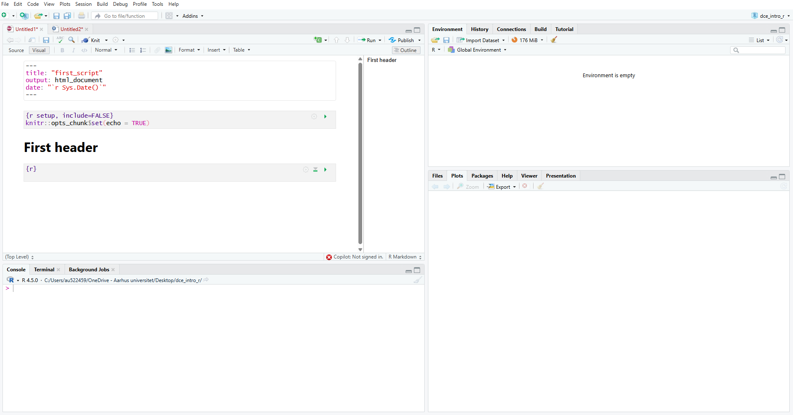

2 Knowing your R environment
In this section, we will introduce the R environment and the RStudio interface — the place where you will write and run your R code.
2.1 R and R Studio - what’s the difference?
R is the engine that does the calculations and runs the code.
RStudio is an integrated development environment (IDE) that makes R easier to use.
We will be using RStudio for (almost) everything in this course.
2.2 The R Studio interface
You will see four main panes/windows when you open R Studio:
Source
Console
Environment/History/Git
Files/Plots/Packages/Help.
| Pane | Typical content | What it’s used for |
|---|---|---|
| Source | Your R Scripts or R Markdown documents | Where you write your code. |
| Console | Where R runs code | Where you run and test code |
| Environment/History/Git | List of objects, datasets, and your command history | To keep track of what’s in memory, connect with Git, and more |
| Files/Plots/Packages/Helps | Access to your files, plots, installed packages, and documentation | To manage your work and explore outputs |
2.3 R Script and R Markdown
2.3.1 R Script
An R Script is simply a text file containing R code, saved with the .R extension. You can think of it as your lab notebook — a place to write, organise, and re-run analyses. You can add text by entering a # before writing your text.
2.3.2 R Markdown/Quarto
While R Scripts are great for writing code, R Markdown and Quarto documents are designed for reproducible reporting.
They combine code, text, and output (tables, plots, etc.) in one document that can be turned into an HTML, PDF, or Word report. When you run your code, the output will be shown in the Console or the Plots pane depending on the type of output.
You can recognise them by their file endings:
.Rmdfor R Markdown.qmdfor Quarto (similar to R Markdown but is a newer and more flexible format)
Each document contains:
Text written in Markdown
Code chunks written in R
When you run your code chunk, the output will be displayed right below.
2.3.3 Which to choose?
You can write and save your R code in either R Scripts or R Markdown/Quarto files.
Both allow you to organise your work and rerun your analyses later — the choice mainly comes down to personal preference and purpose.
R Markdown (or Quarto) files may be preferred because:
Text and code are clearly separated — code must be placed inside code chunks.
The output (e.g., results, tables, or plots) appears immediately below the code that produced it.
This structure makes it easier to follow the logic of your analysis.
In contrast, R Scripts rely on text lines starting with # for comments, which can become cluttered if you are not used to reading source code. When you run code from a Script, the output appears in the Console (or the Plots pane), rather than below the code itself.
One important difference is that R Scripts can be sourced, meaning you can reuse functions or parts of code in other scripts. This is especially helpful once you start writing your own functions or structuring larger projects. In fact, this may be the most important feature of R Script that in the long run will make you prefer this format.
If your goal is to create a report that combines code, text, and results — for example, an HTML, PDF, or Word file — then R Markdown or Quarto is the right choice.
2.4 Create an R Markdown file or an R Script
File->New file->R Markdown...- Choose
'Document' - Enter a title. We could call it “first_script”
- Just keep as HTML. The specific output file only matters when you choose to knit your R Markdown file.
File->New file->R Script
2.5 Create sections
In your R Markdown file, you can create headers and set the header level by the number of “#”.
For instance
# = Header 1,
## = Header 2,
### = Header 3
Create a header 1 and type “First header”
To write code, insert a code block by entering: Ctrl + Alt + I
You can assess a “Table of Content” view in the “Outline” pane on the right-hand side of your Source pane.

In your R Script file, you can create a section header by entering: Ctrl + Shift + R and type “First header”.
To write code, just start writing!
You can assess a “Table of Content” view in the “Outline” pane on the right-hand side of your Source pane.
2.6 Style your document
It is good practice to keep your code clean and consistent. Well-formatted code is easier to read. The styler package helps automatically format your R code according to common style guides, such as the tidyverse style guide.
In RStudio, you can easily style your code without typing any commands.
Open the Command Palette (press
Ctrl + Shift + Pon Windows orCmd + Shift + Pon Mac).Type “Style active file” and press Enter.
Choose Tidyverse style guide when prompted.
RStudio will automatically reformat your code — fixing spacing, indentation, and line breaks while keeping your code behaviour exactly the same.